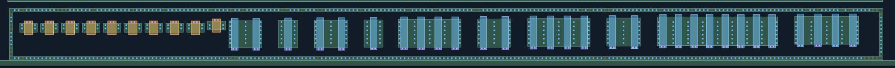
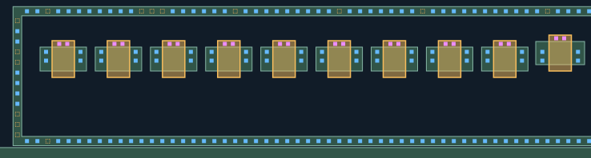
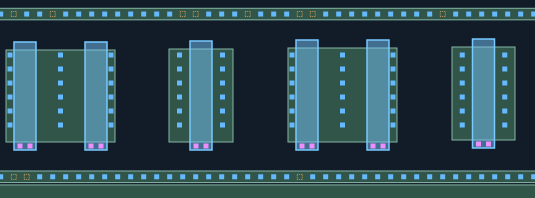
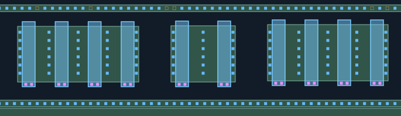
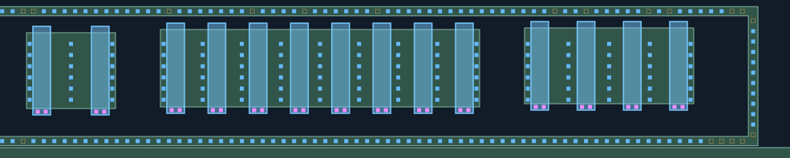

CT材料联合重建复核
蓝色：新增AA接触；紫色：新增POLY接触；灰蓝：已审CT，保持不变、不重复验收。
新孔均有照片观察支持，采用局部材料对应，未使用全幅盲投影。AA/POLY材料未修改。
橙色虚框仅为待查槽位，不计为CT，也不代表实际缺孔。
仅重建下列局部观察支持的孔列；未补齐缺少证据的位置，未画不代表没有孔。
新区域的材料对应仍为AI候选，孔数不是人工确认值。几何检查不是真实工艺DRC，M1归属未知。
整体质量门与防退化检查 ·
匹配与未选择观察记录 · 本批范围与51处未知 · 一次性审批清单
上方同一环内40条栅：源漏、栅端、外围环CT整组复核
本批包含左侧10个更小MOS与右侧30条长栅，全部源漏、栅端与外围环已处理。左侧栅CT为上端候选，右侧为下端候选，未沿用Q2下端裁决。紫色新POLY孔、蓝色新AA孔，灰蓝原1885保留孔；橙色仅待查槽位，不是实际缺孔。上环细亮峰受拍屏网格/连续反射影响，候选相位依据同环规则与实测峰，仍需人审。
逐孔列数量与待查槽位（0起编号）
- UP-UG01-GATE: 2 孔；待查槽位 []
- UP-UG02-GATE: 2 孔；待查槽位 []
- UP-UG03-GATE: 2 孔；待查槽位 []
- UP-UG04-GATE: 2 孔；待查槽位 []
- UP-UG05-GATE: 2 孔；待查槽位 []
- UP-UG06-GATE: 2 孔；待查槽位 []
- UP-UG07-GATE: 2 孔；待查槽位 []
- UP-UG08-GATE: 2 孔；待查槽位 []
- UP-UG09-GATE: 2 孔；待查槽位 []
- UP-UG10-GATE: 2 孔；待查槽位 []
- UP-UG11-GATE: 2 孔；待查槽位 []
- UP-UG12-GATE: 2 孔；待查槽位 []
- UP-UG13-GATE: 2 孔；待查槽位 []
- UP-UG14-GATE: 2 孔；待查槽位 []
- UP-UG15-GATE: 2 孔；待查槽位 []
- UP-UG16-GATE: 2 孔；待查槽位 []
- UP-UG17-GATE: 2 孔；待查槽位 []
- UP-UG18-GATE: 2 孔；待查槽位 []
- UP-UG19-GATE: 2 孔；待查槽位 []
- UP-UG20-GATE: 2 孔；待查槽位 []
- UP-UG21-GATE: 2 孔；待查槽位 []
- UP-UG22-GATE: 2 孔；待查槽位 []
- UP-UG23-GATE: 2 孔；待查槽位 []
- UP-UG24-GATE: 2 孔；待查槽位 []
- UP-UG25-GATE: 2 孔；待查槽位 []
- UP-UG26-GATE: 2 孔；待查槽位 []
- UP-UG27-GATE: 2 孔；待查槽位 []
- UP-UG28-GATE: 2 孔；待查槽位 []
- UP-UG29-GATE: 2 孔；待查槽位 []
- UP-UG30-GATE: 2 孔；待查槽位 []
- UP-UG31-GATE: 2 孔；待查槽位 []
- UP-UG32-GATE: 2 孔；待查槽位 []
- UP-UG33-GATE: 2 孔；待查槽位 []
- UP-UG34-GATE: 2 孔；待查槽位 []
- UP-UG35-GATE: 2 孔；待查槽位 []
- UP-UG36-GATE: 2 孔；待查槽位 []
- UP-UG37-GATE: 2 孔；待查槽位 []
- UP-UG38-GATE: 2 孔；待查槽位 []
- UP-UG39-GATE: 2 孔；待查槽位 []
- UP-UG40-GATE: 2 孔；待查槽位 []
- UP-RING-TOP: 186 孔；待查槽位 [2, 11, 12, 13, 20, 30, 38, 50, 55, 58, 68, 69, 73, 77, 78, 88, 100, 107, 117, 118, 144, 146, 150, 151, 164, 172, 177, 184, 201, 204, 210, 212, 218, 219]
- UP-RING-BOTTOM: 211 孔；待查槽位 [2, 55, 56, 77, 150, 216, 217, 218, 219]
- UP-RING-LEFT: 6 孔；待查槽位 [0, 3, 4, 9, 10, 11]
- UP-RING-RIGHT: 10 孔；待查槽位 [0, 11]
O 完整范围与三类CT总览
原1885 CT与全部AA/POLY保持不变。M1对照为独立原图坐标，不作精确孔位投影，不推共栅。
双击图像可在新页放大查看。

T 左侧10个小MOS：源漏＋上端栅CT＋环
原1885 CT与全部AA/POLY保持不变。M1对照为独立原图坐标，不作精确孔位投影，不推共栅。
双击图像可在新页放大查看。

L 右侧长栅左段：6条栅
原1885 CT与全部AA/POLY保持不变。M1对照为独立原图坐标，不作精确孔位投影，不推共栅。
双击图像可在新页放大查看。

M 右侧长栅中段：10条栅
原1885 CT与全部AA/POLY保持不变。M1对照为独立原图坐标，不作精确孔位投影，不推共栅。
双击图像可在新页放大查看。

R 右侧长栅右段：14条栅
原1885 CT与全部AA/POLY保持不变。M1对照为独立原图坐标，不作精确孔位投影，不推共栅。
双击图像可在新页放大查看。

RT 上环完整候选与相位待查槽位
原1885 CT与全部AA/POLY保持不变。M1对照为独立原图坐标，不作精确孔位投影，不推共栅。
双击图像可在新页放大查看。
RB 下环完整候选与待查槽位
原1885 CT与全部AA/POLY保持不变。M1对照为独立原图坐标，不作精确孔位投影，不推共栅。
双击图像可在新页放大查看。